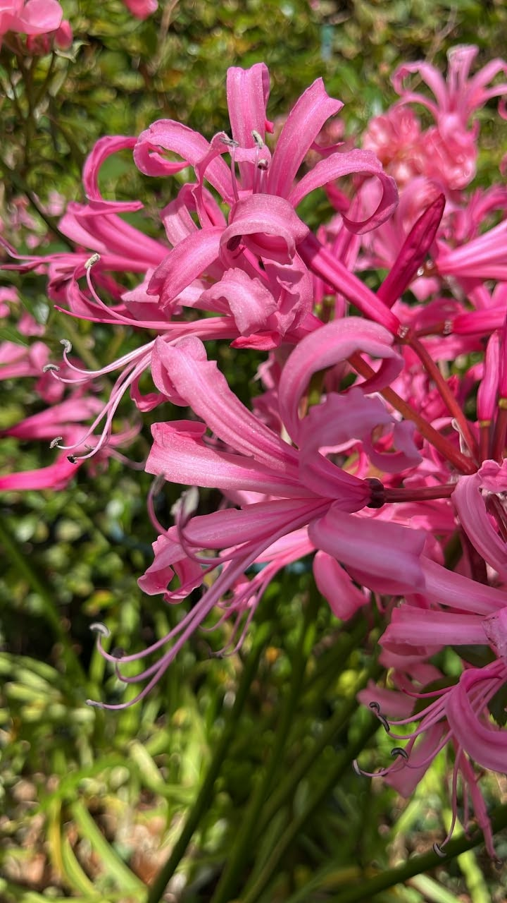

8 October 2026 · October Plant Spotlight
Still flowering in October? Meet the Cornish lily!
Just look at that splash of pink! While many summer flowers are starting to fade, the Cornish lily (Nerine bowdenii), also called Bowden lily, comes into its own during autumn.
Its distinctive, curled petals can brighten borders in September and October — proof that the garden still has plenty to offer long after summer ends.
Read more: how to grow Cornish lilies
- Position: choose a sunny, sheltered spot.
- Soil: free-draining soil helps bulbs thrive, particularly over winter.
- Planting: avoid burying bulbs too deeply — leave the neck exposed in a suitable sheltered position.
- After flowering: remove spent flowerheads and let the leaves die back naturally.
- Best tip: leave established clumps undisturbed for a good display in future years.
KS Garden Services · Keeping Gardens Looking Their Best.